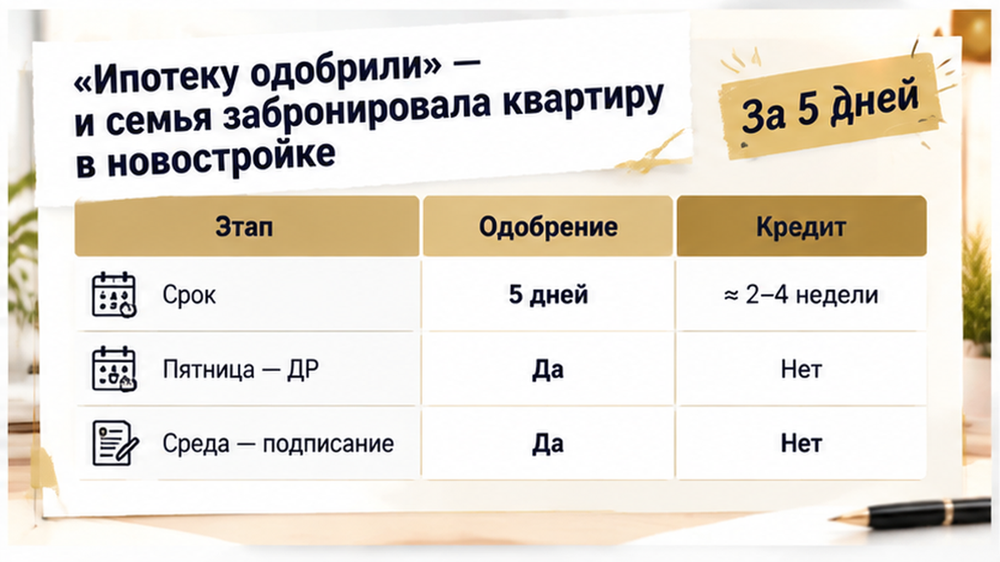
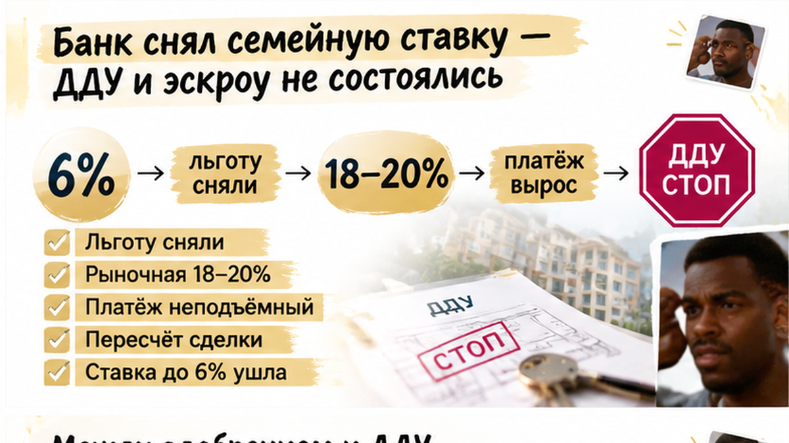
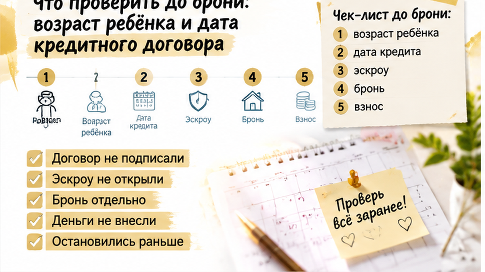
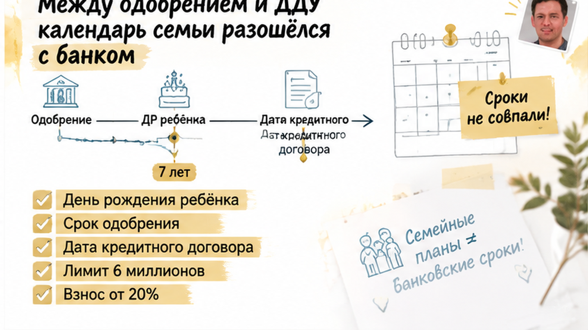

В пятницу ребёнку исполнилось семь лет, а на следующую среду у семьи была назначена сделка по новостройке в Тюмени. За пять дней до ДДУ семейную ипотеку сняли: квартира уже была в брони, предварительное одобрение банка — на руках, первоначальный взнос и платёж считались по ставке до 6%. Но банк смотрел на дату заключения кредитного договора. К этому моменту прежнее основание для льготной ставки уже перестало подходить.
Я разбираю такие календарные расхождения до брони, а не после неё. Практические разборы новостроек и семейной ипотеки — в Telegram и MAX.
Семья с одним ребёнком выбирала квартиру в строящемся доме. Когда банк вынес предварительное решение, ребёнку ещё не исполнилось семь лет, поэтому в расчётах появилась семейная ипотека: ставка до 6%, понятный первоначальный взнос и платёж, который укладывался в бюджет.
Подходящую квартиру быстро нашли и забронировали. Застройщик поставил сделку в график, а семья уже распределила будущую жизнь по комнатам и внесла дату подписания документов в календарь.
Обычный покупатель в такой момент думает: «Ипотеку же уже одобрили». Для банка это не всегда означает, что условия сохранятся до сделки. Предварительное решение — ещё не заключённый кредитный договор.
До выдачи кредита банк повторно проверяет документы, доход, объект и соответствие требованиям программы. За время подготовки ДДУ, регистрации и открытия эскроу могут измениться и обстоятельства семьи.
Бронь резервирует лот на условиях отдельного договора, но не открывает эскроу и сама по себе не закрепляет семейную ставку. Поэтому после одобрения важно сразу уточнить, какая дата будет ключевой для окончательного решения.
В этой истории условия изменились не без причины: между предварительным решением и оформлением кредита прошёл срок, за который перестало действовать основание для участия в программе. О другом случае — когда ставку подняли прямо накануне ДДУ и платёж стал неподъёмным, — я писал в материале о повышении ставки накануне ДДУ.

Предварительное решение приняли, когда ребёнку ещё не исполнилось семь лет, а ДДУ назначили на несколько недель позже. За пять дней до подписания ребёнку исполнилось семь лет: в пятницу семья ещё рассчитывала на семейную ипотеку, а в следующую среду должна была подписывать документы уже после изменения обстоятельства, влияющего на право на льготную программу.
Ключевой считается дата заключения кредитного договора — не день подачи заявки, предварительного одобрения, оплаты брони или подписания ДДУ. В новостройке ДДУ и кредитный договор часто оформляют в один день или рядом по времени, поэтому их легко принять за одну точку. Но возраст ребёнка банк проверяет именно при оформлении кредита.
Если ребёнок один, основание для семейной ипотеки действует до шести лет включительно. После седьмого дня рождения оно уже не подходит, если у семьи нет другого основания для участия в программе. Предварительное одобрение эту дату не переносит.
На финальной проверке банк сообщил, что прежняя льготная ставка больше не подтверждается. При переходе к рыночному расчёту платёж оказался для семьи неподъёмным. Квартира никуда не исчезла, бронь ещё действовала, но прежняя экономика покупки уже не складывалась.
Здесь легко перепутать три разные вещи: предварительное решение, бронь и кредит. Одобрение говорит, что семья подходит по представленным данным на этапе проверки. Бронь удерживает выбранный лот на условиях договора. А право на льготную ставку банк снова оценивает перед заключением кредитного договора.
Поэтому календарь сделки нужно собирать вокруг дня рождения ребёнка, срока действия предварительного одобрения, финальной проверки банка и предполагаемой даты кредита. Если одна из этих дат оказывается между бронью и подписанием, вопрос лучше задать до внесения денег.
К этому моменту квартира была выбрана, лот забронирован, а дата подписания ДДУ стояла в календаре. Семья видела понятную картину: предварительное решение есть, платёж рассчитан под семейную ипотеку, до сделки осталось несколько недель.
Но в пятницу ребёнку исполнилось семь лет. ДДУ назначили на следующую среду, а кредитный договор ещё не заключили.
На финальной проверке банк заново посмотрел основание для льготной ставки и сообщил: прежняя категория больше не подходит. Для семьи с одним ребёнком важен возраст до шести лет включительно. После седьмого дня рождения это основание уже не действует, если нет другого условия для участия в программе.
Семья считает датами заявки, брони и ДДУ: «Нас же уже одобрили». Банк смотрит на дату заключения кредита. Перед его выдачей он ещё раз оценивает документы, доход, объект и обстоятельства, от которых зависит льготная ставка. Если за время между решением и сделкой ребёнок перешёл возрастной порог, прежний расчёт может перестать работать.

Такой разрыв легко пропустить, пока семья согласует планировку, ждёт документы на объект и подбирает дату регистрации. День рождения ребёнка оказывается не только семейной датой, но и частью расчёта по кредиту.
После финальной проверки семье предложили пересчитать сделку: перейти на рыночную ставку или рассмотреть вариант с рыночной частью вместо льготной. При ориентире рынка около 18–20% платёж стал неподъёмным. Это не тариф конкретного банка, а пример того, как меняется экономика покупки при переходе от ставки до 6% к рыночному расчёту.
Семья остановилась до подписания ДДУ. Договор не ушёл на регистрацию, эскроу не открыли, собственные и кредитные деньги на депозит не внесли. Бронь лишь резервирует лот у застройщика: сама по себе она не запускает защищённый счёт и не закрепляет льготную ставку.

Что будет с платой за бронь, решается отдельно. Нужно смотреть договор: срок бронирования, порядок отказа, условия возврата или удержания денег и момент снятия лота с продажи. Сам факт, что ДДУ не подписали из-за нового расчёта, ещё не даёт универсального ответа.
Здесь первым событием стал возраст ребёнка, а неподъёмный платёж — уже финансовым последствием. В другой ситуации сделка может остановиться позже, когда деньги уже попали на эскроу и сроки сдачи объекта начинают давить на покупателя. Например, перенос ключей может заморозить деньги на эскроу. В этой семье удалось остановиться раньше.
Ребёнку исполнилось 7 лет в пятницу, а ДДУ назначили на среду — кто должен был предупредить семью: банк, застройщик или риелтор?
Без документов нельзя утверждать, что кто-то нарушил обязанность. Зоны ответственности разные: банк сверяет право на льготу, застройщик отвечает за бронь, а специалист может сопоставить день рождения ребёнка со сроком одобрения и графиком подписания. Именно по этому сопоставлению и стоит принимать решение — не по фразе «ипотека одобрена».
В такой сделке важно поставить рядом три даты: день рождения ребёнка, срок действия предварительного решения и дату заключения кредитного договора.
Для семьи с одним ребёнком основание для семейной ипотеки действует, когда ребёнку ещё нет 7 лет. Важна не дата заявки и не день внесения платы за бронь, а момент заключения кредитного договора.
| Что сверить | Почему это важно |
|---|---|
| Дата рождения ребёнка | После исполнения 7 лет прежнее основание для семьи с одним ребёнком перестаёт подходить, если кредитный договор ещё не заключён. |
| Срок действия предварительного одобрения | Одобрение действует ограниченный срок и не фиксирует льготную ставку до будущей сделки. |
| Дата кредитного договора | Именно она важна для проверки возраста ребёнка по условиям программы. |
| Дата ДДУ | ДДУ и кредитный договор часто подписывают рядом, поэтому их нужно планировать как одну цепочку. |
| Условия бронирования | Бронь не является эскроу. Возврат платы зависит от отдельного договора. |
Первый вопрос банку лучше задать прямо: «Какая дата будет считаться датой заключения кредитного договора и успеваем ли мы к ней по возрасту ребёнка?» Ответ желательно получить письменно. Устное «заявка одобрена» финальную проверку не заменяет.
Затем разложите покупку по дням: бронь, проверка объекта, подготовка ДДУ, кредитный договор, подписание ДДУ и регистрация. Если день рождения попадает внутрь этой цепочки, бронь не защищает семейную ставку.

В Тюменской области для льготной части семейной ипотеки действует лимит до 6 млн рублей, первоначальный взнос заявлен от 20%, ставка может быть до 6% на льготную часть. Если основание не подтверждается, банк может рассматривать рыночную или комбинированную схему.
Ориентир рыночной ставки около 18–20% показывает масштаб перемены, но не является тарифом конкретного банка и не позволяет заранее назвать новый платёж. В этой истории пересчёт оказался для семьи неподъёмным.
Нужно также проверить, есть ли у семьи другое основание для участия в программе. Здесь речь шла об одном ребёнке и не было дополнительных условий, которые продолжили бы право на льготу после 7-летия. У другой семьи результат может быть иным — его определяют документы и правила на дату сделки.
Отдельно прочитайте договор бронирования: в нём должны быть указаны срок брони, порядок отказа, условия возврата или удержания платы и момент возврата квартиры в продажу. Если ДДУ не подписан, эскроу не открывается, но судьба платы определяется именно этим договором.
Полезно помнить и о другой точке остановки: семейную ипотеку на новостройку одобрили, а эскроу не открыли. Наличие одобрения не означает, что вся цепочка сделки уже пройдена.
До брони попросите участников сделки ответить на четыре вопроса: какая дата считается заключением кредитного договора, кто назначает подписание, сколько длится финальная проверка и что произойдёт с бронью, если льготное основание не подтвердится.
Если день рождения ребёнка близко, сначала сопоставьте его со сроком одобрения и предполагаемой датой договора. И только после этого решайте, стоит ли вносить плату за бронь.
Нужно сверить календарь сделки по новостройке в Тюмени? Напишите в Telegram или MAX — разберём возраст ребёнка, сроки банка и условия брони.
Сохраните расчёты банка, переписку о программе и договор бронирования. По ним можно восстановить, какая дата обсуждалась и какие последствия предусмотрены при отказе. Одобрение не закрывает все следующие этапы: иногда цепочка останавливается ещё до регистрации.
В этой ситуации семья остановилась до ДДУ. Деньги на эскроу не ушли, и у людей осталось пространство спокойно проверить условия, а не принимать неподъёмный платёж под давлением даты сделки.